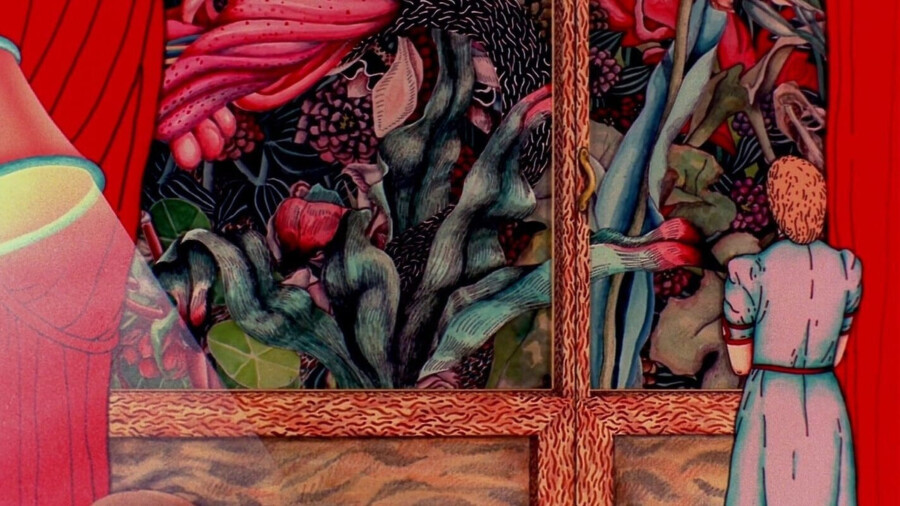

Onion City: Opening Night – Useful Fantasy
The 36th Onion City Experimental Film Festival opens with USEFUL FANTASY, a special shorts program at the Gene Siskel Film Center curated by artist Peter Burr and presented in partnership with 150 Media Stream. The program features a 35mm print of Suzan Pitt’s iconic ASPARAGUS (1979) restored by the Academy Film Archive, as well as Peter Tscherkassky’s avant-garde masterpiece OUTER SPACE (1999, 35mm). Accompanying these prints are digital presentations of Peter Burr’s ALONE WITH THE MOON (2012), Vince Collins’s MALICE IN WONDERLAND (1982), Shana Moulton’s THE MOUNTAIN WHERE EVERYTHING IS UPSIDE DOWN (2005), and Boris Labbé’s LA CHUTE (2018). Peter Burr will be in attendance to present a work-in-progress preview of his generative artwork MAINTENANCE GAME (2026). Co-presented by 150 Media Stream. The program will take place at 8pm on April 9, 2026 and will be preceded by a reception and installation hosted by 150 Media Stream at 150 N. Riverside Plaza from 5:30pm–7:30pm.
Most fantasy is useless. That’s the point. It’s the space we reserve for what doesn’t have to justify itself. USEFUL FANTASY insists on having both of its ways, gathering films that build worlds through their psychic accumulation, letting meaning emerge so indirectly it might not emerge at all. Not all fantasy does the same work. Some fantasy simplifies, promising escape into the manageable and known. The fantasy gathered here moves in the opposite direction. It opens doors rather than closing them. It intensifies uncertainty rather than resolving it. In an era where imagination is constantly recruited for branding, forecasting, or visioning corporate futures, these works practice a different kind of thinking. They construct environments that resist extraction, realms that can’t be converted into actionable insights or reassuring narratives. Their allegories feel urgent and specific without ever declaring what they’re allegories of. This is fantasy as a form of refusal: not escape from reality but escape from the demand that reality be simple or weirdness eventually resolve into something we can use. These works stay strange precisely because they don’t owe us anything. They hold open space for thinking that might circle its target forever and refuse to land. (Peter Burr)